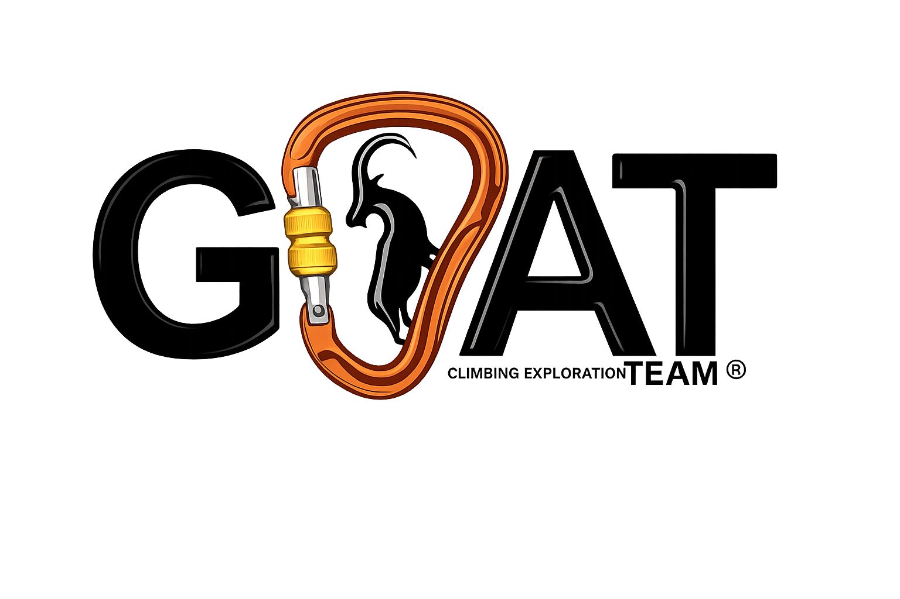

Welcome to GOAT TEAM OUT FITTERS Mountain climbing organizers and trekkings trips from very simple to complex logistics to climbing.
The walking tours are normally simple and do not require great fitness, although a minimum physical condition is requested since all tours are walking from 3 to 5 or 7 hours normally at a moderate speed check what equipment you will go to need for the expedition you take.